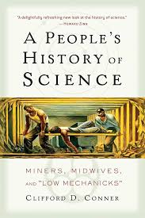
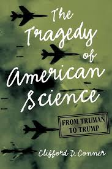

Exercise 0#
HW 1: Physics as Work: Whose Labor Builds “Foundations”?#
You have just begun a course that often presents physics as a set of timeless laws discovered by a small number of brilliant individuals. In fact, much of the collective history of physics has been framed this way, often omitting the contributions of many people whose labor made those discoveries possible. It’s an unfortunate but common narrative that can shape how we think about who does physics and how it is done. All scientific work, including physics, happens within workplaces, institutions, and economies. Physics is no more apolitical than any other human endeavor. We define politics broadly here to include questions of power, labor, resources, and social context.
To be clear, politics are not distractions from “real” physics; they are part of how physics is made and understood.
Physics is the Work of Many
 Image credit: Wikimedia Commons, Public Domain
Image credit: Wikimedia Commons, Public Domain
The photo above shows part of the team that operates the Vera C. Rubin Observatory in Chile. The observatory is named after Vera Rubin, whose pioneering work on galaxy rotation curves provided some of the first evidence for dark matter. But as you can see, many people are involved in making the observatory work, from scientists to engineers to technicians to support staff. Their collective labor is essential for the observatory to function and for the scientific discoveries it will enable.
0a: In ~150 words, reflect on an example of “foundational work” in physics you already knew before this course (e.g., Newton, Galileo, Kepler, Maxwell). Describe where you first learned the story and how it framed the scientist — as lone genius, heroic figure, careful observer, etc. then discuss how that framing shaped your impressions of physics as a field of study.
0b: In ~150 words, identify the forms of hidden, collective, or material labor that such stories often omit (instrument makers, calculators, students, artisans, workers who built observatories, printers who circulated texts, etc.). Connect this to your first impressions of the field as you enter PHY321. How does recognizing this labor change your understanding of how physics is done?
0c: In ~150 words, propose a way physics education could better represent the collective and material labor that makes scientific discovery possible. What would that change about how you imagine yourself participating in physics? How might it change how others see the field?
HW2: How do we talk about scientific efforts?#


Learning about how science has been done and the stories that we tell ourselves about it are important.
The stories we tell ourselves
You are likely familiar with the statement “Standing on the Shoulders of Giants” – a quote that has been attributed to a number of different people including Newton and Pascal. It’s so famous, that Stephen Hawking has written a book with the title, Google Scholar uses the phrase as its tagline, and the band Oasis even has an album with the name.
However, have you ever considered that phrase critically?
Have you considered how that statement frames science as the accomplishments of single individuals or brilliant thinkers? Or how that “Shoulders of Giants” framing erases the many contributions of everyday people and even learned contributors to science?
This framing suggests a specific way that science came about: through the heroic efforts of singular individuals. This framing doesn’t acknowledge the contributions of many people including those who could not/cannot read or write, those who were not part of privileged classes, or dominant cultures, and even scientists who were fortunate to become known in their own right.
For this exercise, we ask that you read this interview with Dr. Clifford D. Conner, author of A People’s History of Science and The Tragedy of American Science: From Truman to Trump, and then respond to the questions below.
📂 Source for interview: https://selections.rockefeller.edu/wp-content/uploads/2012/07/ns-03-2006.pdf
Why are we reading this?
This interview and its contents might challenge your vision of science and the world. That is ok, you don’t have to agree with Dr. Conner’s views, but it is important for you to learn about these other perspectives.
It is also ok if the history raised or the words used are unfamiliar to you; learning this history and the unfamiliar words is part of learning about science.
And if you have questions, just ask.
0a: In ~150 words, summarize the interview, what you learned from it, and what you have more questions about.
0b: In ~150 words, how does Conner frame the development of science? What evidence does Conner use to do this?
0c: In ~150 words, what do you think about Conner’s framing of the development of science? How does it align or conflict with your current (or prior) understanding of the development of science?
HW3: Physics and Capital#

Fig. 42 Artist rendition of the first nuclear reactor. Erected in 1942 at the University of Chicago’s Stagg Field. Source: Wikimedia Commons#
There’s a substantive argument to be made that physics as an enterprise has driven capital investment and the development of technologies that we enjoy. There’s also an argument that can be made that the defense and weapons industry invested heavily in physics research, especially during the Cold War, which lead to the development consumer products as corporate actors looked for places to make additional profits. There’s still another argument that the exploitation of people and resources in nations and lands that are less developed than the US and Western Europe provided the necessary materials and capital to develop Big Science.
Certainly the story of physics and the development of our politics and economy is more complex than these isolated arguments. But, the stories that are platformed matter to physics, to science, and to our society.
Some in physics like Michio Kaku have adopted ways of thinking and writing that speak about the future of physics, technology, and the world. Their prognostications are often more fantasy than reality. Seriously, read any of their books. Increasingly, with the rise of billionaire technologist who explore even more fanciful futures that are inaccessible to most, we should take a moment to read and deconstruct how physics is being used to make these arguments seem plausible (they are not).
Read this 2022 interview from the World Economic Forum with Michio Kaku on how Physics could create the “Perfect Capitalism”: https://www.weforum.org/stories/2022/01/michio-kaku-says-physics-will-create-a-perfect-capitalism/
Why are we reading this?
This interview and its contents are important for us to understand. Many members of society including policy-makers hear scientists like Kaku and assume they are speaking with authority and clarity - like they do more frequently in research physics. However, we must distinguish between established science and ideas for the future.
Moreover, we need to understand the relationship between physics, politics, and the economy, especially when certain voices are elevated and heard above others. The arc of scientific research has often been bent towards the interests of the powerful and the vocal. For example, take the recent gutting of federal science and science education by billionaire technologist Elon Musk and the DOGE commission, which has sent American science back at least a decade.
You don’t have to disagree or agree with the views presented in the interview; it is important for you to learn about how others speak about our discipline, so you can decide how you will do so.
And if you have questions, just ask.
Now answer the follow questions:
0a: In ~150 words, summarize the interview with Kaku, what you learned from it, and what you have more questions about.
0b: In ~150 words, react to this section of the interview. Use your own understanding of wealth and where you understanding of it in comes from. In doing so, critique Kaku’s statement. Note that Kaku’s definition is not so much different from your own in that his simply comes from his own experience and views about the world; not from the scholarly study of economics and history.
To understand economics, you must understand where wealth comes from. If you talk to an economist, the economist might say, “Wealth comes from printing money.” A politician might say, “Wealth comes from taxes.” I think they’re all wrong – the wealth of society comes from physics.
Physicists like Kaku often speak in the absolute, especially in mass media. They also frequently speak about things that are far more complex and nuanced than their understanding of it is. Physics is model-driven and so these physicists often apply reductionist arguments to complex ideas.
For example, Kaku states, “[t]he Chinese system works because they’ve mastered one art: copying.”
This is both a sweeping and a false statement that is easily refuted by observing the substantial investments in green energy technologies and developments of high-speed train systems throughout China. China leads the world in both of these areas; both from an engineering standpoint and an implementation perspective.
Further research would find how the Chinese government has invested in STEM schooling, STEM research, and university-corporate partnerships over decades to build both the human capital and infrastructure to lay the groundwork for these advancements.
0c: In ~150 words, find another seemingly false or sweeping statement that Kaku makes about physics and capitalism. Do a web search on these ideas and identify more true or more nuanced explanations. Please include links or citations to what you found.
HW4: Open Science: Reproducibility and Accessibility#
Science is a collective endeavor. Historically however, much of scientific knowledge has been represented as the work of individual geniuses. Moreover, access to scientific knowledge has often been restricted to privileged groups through paywalls, expensive textbooks, and exclusive institutions. This has led to significant barriers for many people who wish to engage with and contribute to scientific knowledge.

Open Science is a movement that aims to make scientific research, data, and dissemination accessible to all levels of society. This includes practices such as publishing in open-access journals, sharing data and code openly, and engaging with the public through outreach and education.
Why are we reading this?
Understanding the principles and practices of Open Science is crucial for fostering a more inclusive and collaborative scientific community. By embracing Open Science, we can help to democratize access to scientific knowledge, allowing a broader range of voices and perspectives to contribute to the advancement of science.
Additionally, Open Science practices can enhance the reproducibility and transparency of scientific research, which are essential for building trust in scientific findings.
Learning about the principles of Open Science will also prepare you to be an active participant in the scientific community, whether as a researcher, educator, or informed citizen.
For this exercise, you should read/skim the Wikipedia article on Open Science and the UNESCO Recommendation on Open Science.
If you have little time, focus on the Principles of Open Science and the Advantages and Disadvantages of Open Science on the Wikipedia page, and Section IV. Areas of Action of the UNESCO report.
In ~150 words, summarize what Open Science is and why it is important.
In ~150 words, discuss how Open Science practices can help to democratize access to scientific knowledge and foster a more inclusive scientific community.
In ~150 words, reflect on how you can incorporate Open Science principles into your own work as a student and future scientist. What are some specific actions you can take to promote Open Science in your academic and professional endeavors?
HW5: Scientific Discoveries, Awards, and Labor#
The 2025 Nobel Prize in Physics was awarded to John Clarke, Michel Devoret, and Robert Schoelkopf for their pioneering work in quantum computing using superconducting circuits (https://www.nobelprize.org/prizes/physics/2025/press-release/).
One of the key components in these circuits is the Josephson junction, which consists of two superconductors separated by a thin insulating barrier. If you haven’t studied superconductivity, it is a very interesting phenomenon that has wide technical applications. Here’s a reasonable overview of the field. Please watch this video as some questions below relate to it.
1a (4pt) In 150 words, summarize what you’ve learned about superconductivity and its applications. Of course, you can bring in other knowledge and ideas you have from learning about it elsewhere, or more research you did into it.
1b (3pt) Review the list of Nobel Prize controversies in Physics. Find one that is particularly interesting to you and follow the references. In 150 words, what did you learn about the controversy? What does it tell you about how we award or reward scientific discovery? What might we do better?
1c (3pt) Let’s return briefly to the story of scientific labor, ala Clifford D. Conner, where much of the work of science is conducted by technicians, students, and other research staff. Indeed, science has become increasingly collaborative since the Nobel Prize was founded. And yet, awards for science are still often delivered to the “principal investigator” - the person who leads the group. In 150 words, explain your view of these awards, consider the affirmative case for awarding these prizes to PIs and consider the labor that produces the science that warrants the award. Do you have ideas for celebrating both accomplishments? Here you might remind yourself of your thinking and writing for Homework 1, Exercise 0 & Homework 2, Exercise 0.